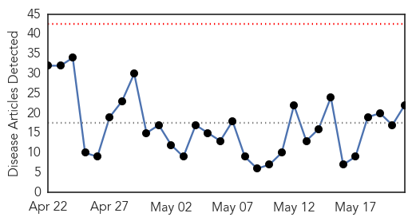
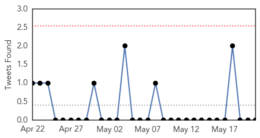
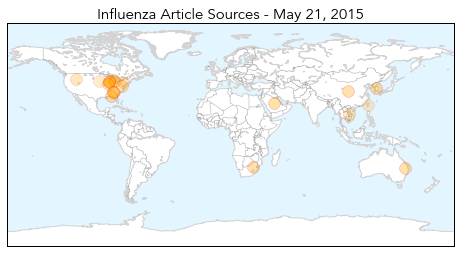
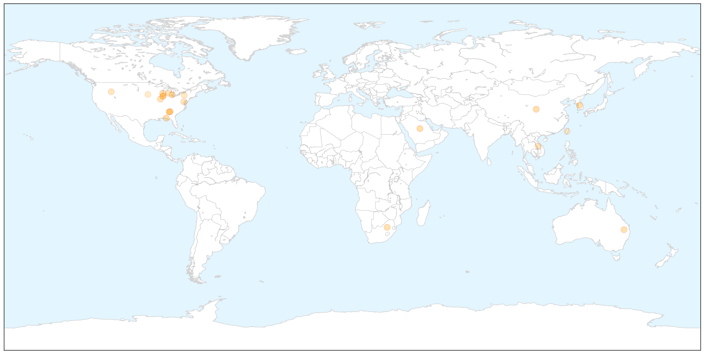
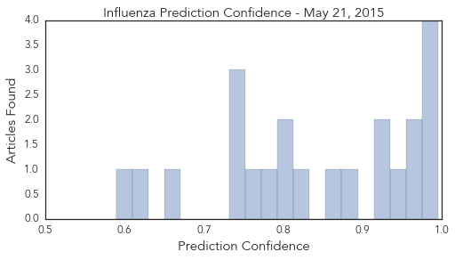
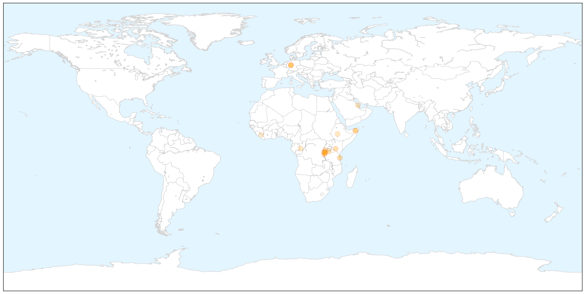

Influenza
30-Day Web Trend
0 alerts, 0 warnings

30-Day Twitter Trend
3 alerts, 0 warnings

Article Locations

X

Article Confidences
Top Articles:
- 0.996
- S. Korea confirms third MERS case; 64 being monitored
- 0.995
- Two cases of norovirus reported in Indian River County
- 0.995
- Korea confirms third MERS case, 64 on watch
- 0.989
- Vaccines developed for H5N1, H7N9 avian influenza strains
- 0.962
- First Case Of New Dog Flu Confirmed In Metro Atlanta
- 0.959
- Dog flu H3N2 spreads beyond the Midwest facts dog owners need to know
- 0.952
- Flu alert: Get the flu shot delivered at home
- 0.929
- Take precautions to prevent dog flu
- 0.926
- Tackling dreaded flu
- 0.880
- Bird flu should concern some, not all
- 0.871
- Tests confirm canine flu confirmed in Georgia linked to Chicago - FOX10 News
- 0.824
- State vet advising owners to be cautious of canine influenza
- 0.812
- Avian Flu Outbreak Takes Poultry Producers Into Uncharted Territory
- 0.798
- Deadly Dog Flu Strain Confirmed in Georgia
- 0.784
- Half of Townsville Hospital staff unvaccinated against the flu
- 0.753
- At start of beach season, vets urge dog owners to be cautious about flu
- 0.751
- May 21, 2015 Archives
- 0.751
- May 20, 2015 Archives
- 0.733
- What You Need to Know About Avian Flu
- 0.660
- Vets confirm no vaccine for dog flu found in Atlanta
- 0.628
- Avian Flu Outbreak Takes Poultry Producers Into Uncharted Territory
- 0.590
- ROC bolsters international health network
Top Tweets:
-
No tweets found for May 21, 2015
Cholera
30-Day Web Trend
5 alerts, 1 warnings

30-Day Twitter Trend
1 alerts, 0 warnings

Article Locations

X

Article Confidences

Top Articles:
- 0.998
- Cholera outbreak kills at least 18 in S. Sudan
- 0.981
- The most from the coast
- 0.979
- In Tanzania, UNICEF working to halt cholera outbreak among Burundian refugees
- 0.969
- Cholera outbreak in Tanzania claims 27 lives
- 0.962
- Kenya : Kenya’s cholera death toll at 65, Cabinet told
- 0.944
- Treasury releases Sh500mn to contain cholera spread
- 0.883
- Cholera outbreak kills 27 Burundian refugees in Tanzania, says UN
- 0.808
- Cholera outbreak kills 27 Burundi refugees in Tanzania: UN
- 0.806
- Cholera outbreak kills 27 Burundi refugees in Tanzania: UN
- 0.797
- Cholera outbreak triggers UNICEF relief operation at Burundi-Tanzania border
- 0.778
- Cholera outbreak kills 27 Burundi refugees in Tanzania
- 0.754
- Reuters Health News Summary
- 0.728
- Cholera outbreak kills 27 Burundi refugees in Tanzania: UN
- 0.713
- Africa needs to address neglected diseases - Opinon
- 0.664
- United Republic of Tanzania: Cholera outbreak triggers UNICEF relief operation at Burundi-Tanzania border
- 0.652
- Cholera outbreak kills 27 Burundi refugees in Tanzania: UN
- 0.596
- Cholera kills Burundi refugees from Bujumbura fighting
- 0.578
- Over 1000 Malangai Residents Drink Unsafe Water
Top Tweets:
-
No tweets found for May 21, 2015